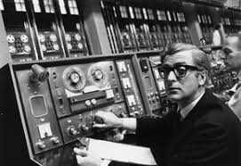
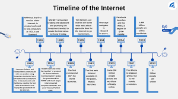

Future of the Internet
The internet is an ever-changing and evolving digital medium, which people of all kinds use; artists, people in business, and so many more. It started out as ARPANET, which was a US Department of Defense project to create a network of shared information back in the 1960s. It evolved since then to accommodate the public, with new concepts being invented in conjunction with the rise of the internet such as websites, a variety of coding programs, and the like. These sub-sections of the internet have advanced further, as well, with websites being designed as more complex and/or appealing to the user, transitioning from static to dynamic web pages, and even social media platforms including (but not limited to): Youtube, Discord, and Instagram. The ways in which the internet has advanced from when it was still the ARPANET is incredible, as it’s still used for basically the same purpose, but now with multiple, ingenious ways of doing so. That’s the greatest thing about the internet, its potential for growth; 50 or 100 years from now, it will likely have advanced further than was thought possible today, or it may even have been re-written and redesigned entirely. Either way, it’s certainly an intriguing idea to think about, as the internet and everything relating to it is prevalent in current times.

To start things off, one can take a closer look at the rich history of the internet, how it’s developed up to the present day, and based on this information, how it may look as it continues to progress several decades (and even a century) into the future. While it is true that ARPANET, made by the US Department of Defense, was where the internet originated from, there’s so much more to it than that. For starters, ARPANET was the precursor to the internet, building the foundation for what the internet would become. This is evidenced by the fact that the internet, overall, retains the same central idea of storing information as its predecessor. As time went on, a new idea which expanded upon the ARPANET was proposed: this idea was an “Intergalactic Computer Network”. This was to be a set of globally linked computers, from which people could access information; this started out as simple messages sent within the US, to international messages as time went on and as the technology used to power the ARPANET was advanced further. However, as ARPANET continued to grow, the limitations of this early stage of the internet became apparent; specifically, when it came to security. The number of people using this domain had become great enough to raise concerns regarding security and safety whilst using ARPANET, which is why the internet was created to succeed ARPANET as the solution. Not just that, but the internet was also released to the public, so everyone could get information using this digital medium. This resulted in the ARPANET becoming obsolete, as everyone (including the Department of Defense) stopped using and closed off this system, moving on to new ones the internet provided with better security instead. This led to the shaping of the internet as we know it today: new coding algorithms, differentiating web pages, and so much more. All of this will continue to advance far into the future, perhaps even transforming into something entirely new that wouldn’t have been thought possible currently.

Moving on, let us also examine the subcategories of the internet, how they came to be, and the ways that they, and the internet as a whole, have grown in conjunction with the rapid advancement of technology. One such sample can be found in the different kinds of coding programs that exist today: Javascript, HTML, CSS, Python, C#, and so many others. All of the programs serve different purposes, whether it be to make video games, websites, art programs, or anything else, function. In the future, there will definitely be more coding programs and algorithms developed to accommodate specific areas of the internet as it continues to evolve; even for new areas that have yet to be discovered. Then, there’s the matter of websites; they’ve adapted to an incredible degree leading up to the modern day, with all kinds of unique visuals, audio, and even base functionality; by this, I mean static versus dynamic websites. Static sites have fixed features; even interactive sites of this type go back to their default settings when the user navigates out. However, dynamic sites can be changed permanently and save the changes that you make, as is the case with the Google suite, for instance. As for the future, there will definitely be new website types on top of these existing ones, as again, the internet is ever-changing and is prevalent in everyday life. Even updates can be made to older sites, or they can be moved to newer domains so they are still able to be viewed.

In short, the history regarding the foundations of the internet, and how it has progressed up to now, is a very long and complex subject to consider. It’s fascinating to think about how rudimentary the first stage of the internet was, then compare it to how it is now: a place to store information, yet very versatile in the ways it can do so. While the future is never set in stone, one thing that you can count on, especially based on the internet’s history and how connected our society is to it, is that it will have advanced farther in 50 to 100 years than anybody could possibly dream of.
Reference